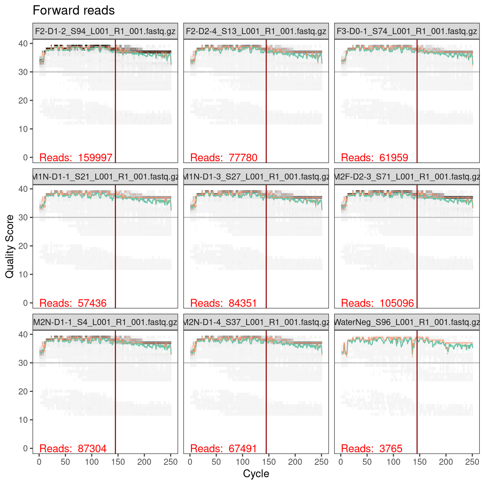
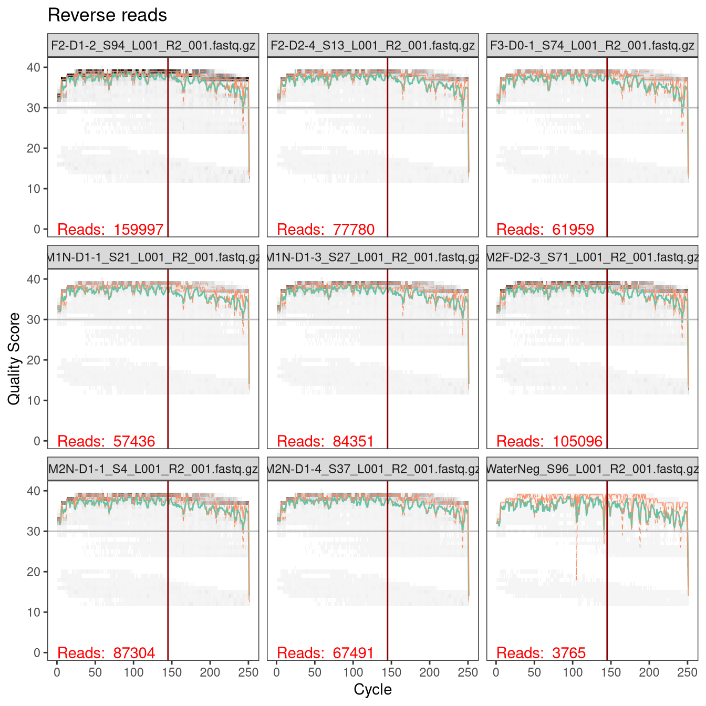

This document analyzes the amplicon data from the A1 sequencing center for the 2021 experiment following the workflow used for the 2019 experiment.
This R-markdown document analyzes the amplicon data from the A1 sequencing center for the 2021 experiment, following the workflow in ‘analysis/2020-11-01-dada2/a1-dada2.html’ that was used for the 2019 experiment.
Load non-bioinformatic libraries,
#> here() starts at /home/michael/research/vivo-vitro#> ── Attaching packages ─────────────────────────────────── tidyverse 1.3.1 ──
#> ✔ ggplot2 3.3.5 ✔ purrr 0.3.4
#> ✔ tibble 3.1.3 ✔ dplyr 1.0.7
#> ✔ tidyr 1.1.3 ✔ stringr 1.4.0
#> ✔ readr 2.0.0 ✔ forcats 0.5.1
#> ── Conflicts ────────────────────────────────────── tidyverse_conflicts() ──
#> ✖ dplyr::filter() masks stats::filter()
#> ✖ dplyr::lag() masks stats::lag()Next, I will install and load the previous DADA2 version that I used for the 2020-11-01 analysis of the 2019 data: version 1.18.0 from Bioconductor, which corresponds to the v1.18 tag (a20a676) on GitHub (https://github.com/benjjneb/dada2/releases/tag/v1.18). (Only run if not previously done.)
dr <- here('lib', 'R', 'library-for-dada2-1.18.0')
if (!dir_exists(dr))
dir_create(dr)
devtools::dev_mode(TRUE, dr)
#> ✔ Dev mode: ONif (packageVersion("dada2") != "1.18.0")
remotes::install_github('benjjneb/dada2@v1.18')
Load DADA2 and functions from bioinformatics libraries
stopifnot(packageVersion("dada2") == "1.18.0")
library(dada2)
#> Loading required package: RcppPath for saving dada2 results:
results_path <- here("output", "2021", "a1", "dada2")
dir.create(results_path, recursive = TRUE)
Path to the fastq files:
reads_path <- here("data", "2021", "a1", "reads")
dir_ls(path(reads_path, "raw")) %>% path_file %>% head
#> [1] "Callahan_M06339R159_293024735.json"
#> [2] "F1-D0-1_S14_L001_R1_001.fastq.gz"
#> [3] "F1-D0-1_S14_L001_R2_001.fastq.gz"
#> [4] "F1-D0-2_S12_L001_R1_001.fastq.gz"
#> [5] "F1-D0-2_S12_L001_R2_001.fastq.gz"
#> [6] "F1-D0-3_S3_L001_R1_001.fastq.gz"Let’s get a data frame with the sample names, paths to the raw reads, and paths to the (to-be-created) filtered reads. Note the creation of DNA sample names from the sequence files: I revert the hyphens back to underscores, make the names of the A1 control samples lowercase, and prepend 2021 to ensure uniqueness and distinguishability from the 2019 DNA samples.
ftb <- tibble(path = dir_ls(path(reads_path, "raw"), glob = "*.fastq.gz")) %>%
mutate(
read_direction = case_when(
str_detect(path, "_R1_") ~ "R1",
str_detect(path, "_R2_") ~ "R2"
),
fastq_sample_id = str_extract(path %>% path_file, "[^_]+"),
dna_sample_id = case_when(
fastq_sample_id %in% c('MockZymoPos', 'WaterNeg') ~
str_to_lower(fastq_sample_id),
TRUE ~ str_replace_all(fastq_sample_id, "-", "_"),
),
dna_sample_id = str_c("2021_", dna_sample_id),
sample_id = str_c("A1_", dna_sample_id),
path_filt = path(reads_path, "filtered",
str_glue("{fastq_sample_id}_{read_direction}_filt.fastq.gz")
)
) %>%
pivot_wider(names_from = read_direction, values_from = c(path, path_filt))
# Check
ftb %>% head %>% mutate(across(starts_with("path"), path_file)) %>% glimpse
#> Rows: 6
#> Columns: 7
#> $ fastq_sample_id <chr> "F1-D0-1", "F1-D0-2", "F1-D0-3", "F1-D0-4", …
#> $ dna_sample_id <chr> "2021_F1_D0_1", "2021_F1_D0_2", "2021_F1_D0_…
#> $ sample_id <chr> "A1_2021_F1_D0_1", "A1_2021_F1_D0_2", "A1_20…
#> $ path_R1 <chr> "F1-D0-1_S14_L001_R1_001.fastq.gz", "F1-D0-2…
#> $ path_R2 <chr> "F1-D0-1_S14_L001_R2_001.fastq.gz", "F1-D0-2…
#> $ path_filt_R1 <chr> "F1-D0-1_R1_filt.fastq.gz", "F1-D0-2_R1_filt…
#> $ path_filt_R2 <chr> "F1-D0-1_R2_filt.fastq.gz", "F1-D0-2_R2_filt…The primers, from Kozich et al, are as previously,
primers <- c(
R1 = "GTGCCAGCMGCCGCGGTAA",
R2 = "TAATCTWTGGGVHCATCAGG"
)
The corresponding amplicon sequences in our reference 16S sequences (excluding the primer region) are
dna <- Biostrings::readDNAStringSet(
here("output", "strain-data", "reference-16s-genes.fasta")
)
primers.dna <- primers %>% map(DNAString)
x <- TrimDNA(dna, primers.dna[[1]], primers.dna[[2]] %>% complement,
type = "sequences")
#> Finding left pattern: 81% internal, 0% flanking
#>
#> Finding right pattern: 81% internal, 0% flanking
#>
#> Time difference of 0.53 secswidth(x) %>% summary
#> Min. 1st Qu. Median Mean 3rd Qu. Max.
#> 60.0 253.0 253.0 240.2 253.0 537.0width(x) %>% table
#> .
#> 60 61 62 74 75 86 110 175 183 197 199 220 253 254 354 360 380
#> 1 1 1 1 1 2 1 1 1 1 1 1 64 3 1 1 1
#> 537
#> 1The length of the amplicon is 253-254 bp excluding the primer sequences.
Next, let’s inspect the sequences for one sample and confirm that the primer sequences ar absent,
reads <- ftb %>%
slice(1) %>%
select(R1 = path_R1, R2 = path_R2) %>%
c %>%
map(readDNAStringSet, format = "fastq")
reads %>% map(head, 2)
#> $R1
#> DNAStringSet object of length 2:
#> width seq names
#> [1] 251 TACGGAGGATCCGAGCGT...AAGTGTGGGTATCAAACA M06339:159:000000...
#> [2] 251 TACGGAGGATCCGAGCGT...AAGTGTGGGTATCAAACA M06339:159:000000...
#>
#> $R2
#> DNAStringSet object of length 2:
#> width seq names
#> [1] 251 CCTGTTTGATACCCACAC...TAACGCTCGGATCCTCCG M06339:159:000000...
#> [2] 251 CCTGTTTGATACCCACAC...TAACGCTCGGATCCTCCG M06339:159:000000...x %>% head(2)
#> DNAStringSet object of length 2:
#> width seq names
#> [1] 253 TACGGAGGATCCGAGCGT...GTGTGGGTATCAAACAGG GCF_000011065.1_1...
#> [2] 253 TACGGAGGATCCGAGCGT...GTGTGGGTATCAAACAGG GCF_000011065.1_1...As expected for this protocol, the primer sequences are not present in the reads and so do not need to be trimmed.
Last time, I determined that the length of the target region (excluding primer sequences) in our reference genomes was 253-254 bp, and that aiming for an overlap of 30bp for a 260bp amplicon was a safe choice. For the 2019 data, we used the following truncation parameters, based on this choice and the observed quality profiles.
trim_left <- c(R1 = 0, R2 = 0)
target_len <- 260
trunc_len <- c(R1 = 145, R2 = 145)
# should overlap by at least
sum(trunc_len) - sum(trim_left) - target_len
#> [1] 30Let’s check some quality profiles to ensure these truncation lengths still look good,
#> [1] 49 65 25 74 18 96 47 24 71ftb %>% slice(idx) %>% pull(sample_id)
#> [1] "A1_2021_M1N_D1_3" "A1_2021_M2F_D2_3" "A1_2021_F3_D0_1"
#> [4] "A1_2021_M2N_D1_4" "A1_2021_F2_D1_2" "A1_2021_waterneg"
#> [7] "A1_2021_M1N_D1_1" "A1_2021_F2_D2_4" "A1_2021_M2N_D1_1"qps <- ftb %>%
slice(idx) %>%
select(R1 = path_R1, R2 = path_R2) %>%
c %>%
map(plotQualityProfile)
#> Warning: `guides(<scale> = FALSE)` is deprecated. Please use
#> `guides(<scale> = "none")` instead.
#> Warning: `guides(<scale> = FALSE)` is deprecated. Please use
#> `guides(<scale> = "none")` instead.p1 <- qps[["R1"]] +
geom_hline(yintercept = 30, color = "grey") +
geom_vline(xintercept = trunc_len[1], color = "darkred") +
ggtitle("Forward reads")
p2 <- qps[["R2"]] +
geom_hline(yintercept = 30, color = "grey") +
geom_vline(xintercept = trunc_len[2], color = "darkred") +
ggtitle("Reverse reads")
p1

p2

The sequencing quality looks excellent, and these truncation parameters will work fine.
First, delete the filtered reads from any previous runs (if they exist),
if (dir_exists(path(reads_path, "filtered")))
dir_delete(path(reads_path, "filtered"))
and set up lists with the paths to the forward and reverse reads (raw and filtered). Note, the file paths are named by sample id so that later DADA2 functions will name the samples by sample id instead of file name.
path_raw <- list(R1 = ftb$path_R1, R2 = ftb$path_R2) %>%
map(set_names, ftb$sample_id)
path_filt <- list(R1 = ftb$path_filt_R1, R2 = ftb$path_filt_R2) %>%
map(set_names, ftb$sample_id)
# Check
path_filt %>% map(tail, 4) %>% map(names)
#> $R1
#> [1] "A1_2021_T1_D0_2" "A1_2021_T1_D0_3" "A1_2021_T1_D0_4"
#> [4] "A1_2021_waterneg"
#>
#> $R2
#> [1] "A1_2021_T1_D0_2" "A1_2021_T1_D0_3" "A1_2021_T1_D0_4"
#> [4] "A1_2021_waterneg"path_filt %>% map(tail, 4) %>% map(path_file)
#> $R1
#> [1] "T1-D0-2_R1_filt.fastq.gz" "T1-D0-3_R1_filt.fastq.gz"
#> [3] "T1-D0-4_R1_filt.fastq.gz" "WaterNeg_R1_filt.fastq.gz"
#>
#> $R2
#> [1] "T1-D0-2_R2_filt.fastq.gz" "T1-D0-3_R2_filt.fastq.gz"
#> [3] "T1-D0-4_R2_filt.fastq.gz" "WaterNeg_R2_filt.fastq.gz"Then filter and trim.
max_ee <- c(R1 = 2, R2 = 2)
out <- filterAndTrim(
path_raw[[1]], path_filt[[1]],
path_raw[[2]], path_filt[[2]],
trimLeft = trim_left, truncLen = trunc_len,
maxN = 0, maxEE = max_ee, truncQ = 2, rm.phix = TRUE,
compress = TRUE, multithread = TRUE)
#> Creating output directory: /home/michael/research/vivo-vitro/data/2021/a1/reads/filteredhead(out)
#> reads.in reads.out
#> F1-D0-1_S14_L001_R1_001.fastq.gz 65860 65448
#> F1-D0-2_S12_L001_R1_001.fastq.gz 120004 119160
#> F1-D0-3_S3_L001_R1_001.fastq.gz 101072 100523
#> F1-D0-4_S77_L001_R1_001.fastq.gz 96217 95597
#> F1-D1-1_S45_L001_R1_001.fastq.gz 94447 93885
#> F1-D1-2_S91_L001_R1_001.fastq.gz 157792 156812errs <- path_filt %>%
map(learnErrors, multithread = TRUE)
#> 116563325 total bases in 803885 reads from 7 samples will be used for learning the error rates.
#> 116563325 total bases in 803885 reads from 7 samples will be used for learning the error rates.plotErrors(errs[[1]], nominalQ = TRUE)
#> Warning: Transformation introduced infinite values in continuous y-
#> axis
#> Warning: Transformation introduced infinite values in continuous y-
#> axisggsave(file.path(results_path, "error-profile-r1.pdf"),
width = 9, height = 9, units = "in")
#> Warning: Transformation introduced infinite values in continuous y-
#> axis
#> Warning: Transformation introduced infinite values in continuous y-
#> axisplotErrors(errs[[2]], nominalQ = TRUE)
#> Warning: Transformation introduced infinite values in continuous y-
#> axis
#> Warning: Transformation introduced infinite values in continuous y-
#> axisggsave(file.path(results_path, "error-profile-r2.pdf"),
width = 9, height = 9, units = "in")
#> Warning: Transformation introduced infinite values in continuous y-
#> axis
#> Warning: Transformation introduced infinite values in continuous y-
#> axisThe following settings for the dada() inference step are used:
pool = "pseudo" optionPSEUDO_PREVALENCE = 4 (increased from default of 2 to reduce the number of spurious low-prev ASVs seen in the pilot)dada()) is run two different ways: The default settings, and with OMEGA_C = 2 (which prevents error correction, so that we can assign abundances using just the error-free read-pairs).OMEGA_CSample inference w/ dada()
dadas <- map2(
path_filt,
errs,
dada,
multithread = TRUE, pool = "pseudo",
PSEUDO_PREVALENCE = 4
)
#> Sample 1 - 65448 reads in 4697 unique sequences.
#> Sample 2 - 119160 reads in 6958 unique sequences.
#> Sample 3 - 100523 reads in 5987 unique sequences.
#> Sample 4 - 95597 reads in 5475 unique sequences.
#> Sample 5 - 93885 reads in 5554 unique sequences.
#> Sample 6 - 156812 reads in 8185 unique sequences.
#> Sample 7 - 172460 reads in 8773 unique sequences.
#> Sample 8 - 75172 reads in 5204 unique sequences.
#> Sample 9 - 112189 reads in 5273 unique sequences.
#> Sample 10 - 101786 reads in 5156 unique sequences.
#> Sample 11 - 69304 reads in 3672 unique sequences.
#> Sample 12 - 94969 reads in 5264 unique sequences.
#> Sample 13 - 79630 reads in 4806 unique sequences.
#> Sample 14 - 77101 reads in 4642 unique sequences.
#> Sample 15 - 60255 reads in 4015 unique sequences.
#> Sample 16 - 97042 reads in 5296 unique sequences.
#> Sample 17 - 70579 reads in 4384 unique sequences.
#> Sample 18 - 159097 reads in 6688 unique sequences.
#> Sample 19 - 181698 reads in 8692 unique sequences.
#> Sample 20 - 77664 reads in 4430 unique sequences.
#> Sample 21 - 93618 reads in 4075 unique sequences.
#> Sample 22 - 88251 reads in 5373 unique sequences.
#> Sample 23 - 109799 reads in 6096 unique sequences.
#> Sample 24 - 77277 reads in 4997 unique sequences.
#> Sample 25 - 61529 reads in 4318 unique sequences.
#> Sample 26 - 114411 reads in 6287 unique sequences.
#> Sample 27 - 86825 reads in 5527 unique sequences.
#> Sample 28 - 100938 reads in 5780 unique sequences.
#> Sample 29 - 138388 reads in 5718 unique sequences.
#> Sample 30 - 121190 reads in 8078 unique sequences.
#> Sample 31 - 48321 reads in 3980 unique sequences.
#> Sample 32 - 74978 reads in 5842 unique sequences.
#> Sample 33 - 88192 reads in 6734 unique sequences.
#> Sample 34 - 59488 reads in 4517 unique sequences.
#> Sample 35 - 56798 reads in 4376 unique sequences.
#> Sample 36 - 4701 reads in 290 unique sequences.
#> Sample 37 - 123886 reads in 8729 unique sequences.
#> Sample 38 - 114778 reads in 7501 unique sequences.
#> Sample 39 - 89279 reads in 5516 unique sequences.
#> Sample 40 - 130957 reads in 8027 unique sequences.
#> Sample 41 - 95941 reads in 5509 unique sequences.
#> Sample 42 - 98169 reads in 7193 unique sequences.
#> Sample 43 - 37066 reads in 3260 unique sequences.
#> Sample 44 - 54188 reads in 4579 unique sequences.
#> Sample 45 - 49635 reads in 4208 unique sequences.
#> Sample 46 - 112161 reads in 7587 unique sequences.
#> Sample 47 - 56984 reads in 4502 unique sequences.
#> Sample 48 - 54202 reads in 4634 unique sequences.
#> Sample 49 - 83712 reads in 5694 unique sequences.
#> Sample 50 - 65605 reads in 5020 unique sequences.
#> Sample 51 - 120519 reads in 8416 unique sequences.
#> Sample 52 - 91230 reads in 6685 unique sequences.
#> Sample 53 - 105343 reads in 6683 unique sequences.
#> Sample 54 - 95711 reads in 6847 unique sequences.
#> Sample 55 - 23778 reads in 2618 unique sequences.
#> Sample 56 - 61644 reads in 4903 unique sequences.
#> Sample 57 - 100885 reads in 5821 unique sequences.
#> Sample 58 - 53540 reads in 4500 unique sequences.
#> Sample 59 - 61227 reads in 5157 unique sequences.
#> Sample 60 - 38705 reads in 3495 unique sequences.
#> Sample 61 - 73178 reads in 4775 unique sequences.
#> Sample 62 - 88770 reads in 6857 unique sequences.
#> Sample 63 - 95226 reads in 6404 unique sequences.
#> Sample 64 - 81273 reads in 5971 unique sequences.
#> Sample 65 - 104297 reads in 6893 unique sequences.
#> Sample 66 - 67016 reads in 4628 unique sequences.
#> Sample 67 - 45497 reads in 3738 unique sequences.
#> Sample 68 - 34725 reads in 3152 unique sequences.
#> Sample 69 - 27993 reads in 2958 unique sequences.
#> Sample 70 - 78087 reads in 5863 unique sequences.
#> Sample 71 - 86625 reads in 6852 unique sequences.
#> Sample 72 - 70246 reads in 5591 unique sequences.
#> Sample 73 - 38941 reads in 3813 unique sequences.
#> Sample 74 - 66999 reads in 5280 unique sequences.
#> Sample 75 - 88560 reads in 6612 unique sequences.
#> Sample 76 - 87663 reads in 6010 unique sequences.
#> Sample 77 - 79991 reads in 6059 unique sequences.
#> Sample 78 - 97182 reads in 6687 unique sequences.
#> Sample 79 - 61489 reads in 5473 unique sequences.
#> Sample 80 - 48628 reads in 4322 unique sequences.
#> Sample 81 - 66638 reads in 5540 unique sequences.
#> Sample 82 - 68799 reads in 5735 unique sequences.
#> Sample 83 - 89866 reads in 5665 unique sequences.
#> Sample 84 - 80522 reads in 6057 unique sequences.
#> Sample 85 - 4824 reads in 319 unique sequences.
#> Sample 86 - 49185 reads in 4062 unique sequences.
#> Sample 87 - 85803 reads in 6111 unique sequences.
#> Sample 88 - 112796 reads in 8017 unique sequences.
#> Sample 89 - 117994 reads in 8282 unique sequences.
#> Sample 90 - 59343 reads in 4683 unique sequences.
#> Sample 91 - 177694 reads in 16533 unique sequences.
#> Sample 92 - 91067 reads in 4404 unique sequences.
#> Sample 93 - 88728 reads in 3049 unique sequences.
#> Sample 94 - 111763 reads in 3283 unique sequences.
#> Sample 95 - 84576 reads in 2982 unique sequences.
#> Sample 96 - 3710 reads in 523 unique sequences.
#>
#> selfConsist step 2Sample 1 - 65448 reads in 6930 unique sequences.
#> Sample 2 - 119160 reads in 11140 unique sequences.
#> Sample 3 - 100523 reads in 8995 unique sequences.
#> Sample 4 - 95597 reads in 9606 unique sequences.
#> Sample 5 - 93885 reads in 8188 unique sequences.
#> Sample 6 - 156812 reads in 13259 unique sequences.
#> Sample 7 - 172460 reads in 14446 unique sequences.
#> Sample 8 - 75172 reads in 8646 unique sequences.
#> Sample 9 - 112189 reads in 8807 unique sequences.
#> Sample 10 - 101786 reads in 9200 unique sequences.
#> Sample 11 - 69304 reads in 5726 unique sequences.
#> Sample 12 - 94969 reads in 7484 unique sequences.
#> Sample 13 - 79630 reads in 6830 unique sequences.
#> Sample 14 - 77101 reads in 7140 unique sequences.
#> Sample 15 - 60255 reads in 6066 unique sequences.
#> Sample 16 - 97042 reads in 7874 unique sequences.
#> Sample 17 - 70579 reads in 7541 unique sequences.
#> Sample 18 - 159097 reads in 11461 unique sequences.
#> Sample 19 - 181698 reads in 13749 unique sequences.
#> Sample 20 - 77664 reads in 6483 unique sequences.
#> Sample 21 - 93618 reads in 6418 unique sequences.
#> Sample 22 - 88251 reads in 7713 unique sequences.
#> Sample 23 - 109799 reads in 11118 unique sequences.
#> Sample 24 - 77277 reads in 7216 unique sequences.
#> Sample 25 - 61529 reads in 7189 unique sequences.
#> Sample 26 - 114411 reads in 10504 unique sequences.
#> Sample 27 - 86825 reads in 8018 unique sequences.
#> Sample 28 - 100938 reads in 10309 unique sequences.
#> Sample 29 - 138388 reads in 8275 unique sequences.
#> Sample 30 - 121190 reads in 12088 unique sequences.
#> Sample 31 - 48321 reads in 6327 unique sequences.
#> Sample 32 - 74978 reads in 8381 unique sequences.
#> Sample 33 - 88192 reads in 10206 unique sequences.
#> Sample 34 - 59488 reads in 7697 unique sequences.
#> Sample 35 - 56798 reads in 6488 unique sequences.
#> Sample 36 - 4701 reads in 558 unique sequences.
#> Sample 37 - 123886 reads in 13134 unique sequences.
#> Sample 38 - 114778 reads in 11552 unique sequences.
#> Sample 39 - 89279 reads in 9599 unique sequences.
#> Sample 40 - 130957 reads in 14202 unique sequences.
#> Sample 41 - 95941 reads in 8125 unique sequences.
#> Sample 42 - 98169 reads in 10337 unique sequences.
#> Sample 43 - 37066 reads in 4795 unique sequences.
#> Sample 44 - 54188 reads in 6598 unique sequences.
#> Sample 45 - 49635 reads in 7092 unique sequences.
#> Sample 46 - 112161 reads in 11980 unique sequences.
#> Sample 47 - 56984 reads in 6673 unique sequences.
#> Sample 48 - 54202 reads in 6559 unique sequences.
#> Sample 49 - 83712 reads in 8368 unique sequences.
#> Sample 50 - 65605 reads in 8323 unique sequences.
#> Sample 51 - 120519 reads in 12104 unique sequences.
#> Sample 52 - 91230 reads in 9993 unique sequences.
#> Sample 53 - 105343 reads in 12323 unique sequences.
#> Sample 54 - 95711 reads in 10181 unique sequences.
#> Sample 55 - 23778 reads in 3690 unique sequences.
#> Sample 56 - 61644 reads in 6902 unique sequences.
#> Sample 57 - 100885 reads in 8843 unique sequences.
#> Sample 58 - 53540 reads in 6355 unique sequences.
#> Sample 59 - 61227 reads in 7515 unique sequences.
#> Sample 60 - 38705 reads in 5075 unique sequences.
#> Sample 61 - 73178 reads in 7442 unique sequences.
#> Sample 62 - 88770 reads in 10089 unique sequences.
#> Sample 63 - 95226 reads in 9272 unique sequences.
#> Sample 64 - 81273 reads in 8694 unique sequences.
#> Sample 65 - 104297 reads in 10830 unique sequences.
#> Sample 66 - 67016 reads in 6563 unique sequences.
#> Sample 67 - 45497 reads in 6175 unique sequences.
#> Sample 68 - 34725 reads in 4881 unique sequences.
#> Sample 69 - 27993 reads in 4327 unique sequences.
#> Sample 70 - 78087 reads in 8959 unique sequences.
#> Sample 71 - 86625 reads in 9790 unique sequences.
#> Sample 72 - 70246 reads in 7833 unique sequences.
#> Sample 73 - 38941 reads in 5987 unique sequences.
#> Sample 74 - 66999 reads in 7357 unique sequences.
#> Sample 75 - 88560 reads in 9136 unique sequences.
#> Sample 76 - 87663 reads in 9192 unique sequences.
#> Sample 77 - 79991 reads in 10162 unique sequences.
#> Sample 78 - 97182 reads in 10146 unique sequences.
#> Sample 79 - 61489 reads in 7489 unique sequences.
#> Sample 80 - 48628 reads in 6058 unique sequences.
#> Sample 81 - 66638 reads in 8953 unique sequences.
#> Sample 82 - 68799 reads in 9123 unique sequences.
#> Sample 83 - 89866 reads in 8589 unique sequences.
#> Sample 84 - 80522 reads in 8915 unique sequences.
#> Sample 85 - 4824 reads in 586 unique sequences.
#> Sample 86 - 49185 reads in 5891 unique sequences.
#> Sample 87 - 85803 reads in 8994 unique sequences.
#> Sample 88 - 112796 reads in 12151 unique sequences.
#> Sample 89 - 117994 reads in 11719 unique sequences.
#> Sample 90 - 59343 reads in 6868 unique sequences.
#> Sample 91 - 177694 reads in 19587 unique sequences.
#> Sample 92 - 91067 reads in 6673 unique sequences.
#> Sample 93 - 88728 reads in 6699 unique sequences.
#> Sample 94 - 111763 reads in 10166 unique sequences.
#> Sample 95 - 84576 reads in 7811 unique sequences.
#> Sample 96 - 3710 reads in 797 unique sequences.
#>
#> selfConsist step 2Check the results:
dadas[[1]][[1]]
#> dada-class: object describing DADA2 denoising results
#> 83 sequence variants were inferred from 4697 input unique sequences.
#> Key parameters: OMEGA_A = 1e-40, OMEGA_C = 1e-40, BAND_SIZE = 16head(getSequences(dadas[[1]][[1]]), 2)
#> [1] "TACGGAGGATCCGAGCGTTATCCGGATTTATTGGGTTTAAAGGGAGCGTAGGTGGATTGTTAAGTCAGTTGTGAAAGTTTGCGGCTCAACCGTAAAATTGCAGTTGAAACTGGCAGTCTTGAGTACAGTAGAGGTGGGCGGAATT"
#> [2] "TACAGAGGTCTCAAGCGTTGTTCGGAATCACTGGGCGTAAAGCGTGCGTAGGCTGTTTCGTAAGTCGTGTGTGAAAGGCGCGGGCTCAACCCGCGGACGGCACATGATACTGCGAGACTAGAGTAATGGAGGGGGAACCGGAATT"Merge paired reads,
mergers <- mergePairs(
dadas[[1]], path_filt[[1]],
dadas[[2]], path_filt[[2]],
verbose = TRUE)
saveRDS(mergers, file.path(results_path, "mergers-1.Rds"))
Construct sequence table
seqtab <- makeSequenceTable(mergers)
saveRDS(seqtab, file.path(results_path, "seqtab-1.Rds"))
dim(seqtab)
#> [1] 96 5038Inspect distribution of sequence lengths
table(nchar(getSequences(seqtab)))
#>
#> 223 225 248 252 253 254 255 257 274 277
#> 1 1 1 5 5015 10 1 1 2 1Remove chimeras (with ‘pooled’ method)
seqtab.nochim <- removeBimeraDenovo(seqtab, method = "pooled",
multithread = TRUE, verbose = TRUE)
#> Identified 4844 bimeras out of 5038 input sequences.#> [1] 96 194#> [1] 0.8524297Track reads through the pipeline,
getN <- function(x) sum(getUniques(x))
track <- cbind(out, sapply(dadas[[1]], getN), sapply(dadas[[2]], getN),
sapply(mergers, getN), rowSums(seqtab.nochim))
colnames(track) <- c("input", "filtered", "denoised_r1", "denoised_r2", "merged",
"nochim")
rownames(track) <- ftb$sample_id
track <- as_tibble(track, rownames = "sample_id")
write_csv(track, file.path(results_path, "track-1.csv"))
head(track)
#> # A tibble: 6 × 7
#> sample_id input filtered denoised_r1 denoised_r2 merged nochim
#> <chr> <dbl> <dbl> <dbl> <dbl> <dbl> <dbl>
#> 1 A1_2021_F1_D0… 65860 65448 65403 65379 64343 50975
#> 2 A1_2021_F1_D0… 120004 119160 119111 119041 117161 96348
#> 3 A1_2021_F1_D0… 101072 100523 100475 100389 99163 78455
#> 4 A1_2021_F1_D0… 96217 95597 95525 95512 94257 79125
#> 5 A1_2021_F1_D1… 94447 93885 93850 93829 92748 78718
#> 6 A1_2021_F1_D1… 157792 156812 156704 156724 155064 135460OMEGA_C = 2rm(dadas, mergers, seqtab, seqtab.nochim, track)
Sample inference w/ dada()
dadas <- map2(
path_filt,
errs,
dada,
multithread = TRUE, pool = "pseudo",
PSEUDO_PREVALENCE = 4,
OMEGA_C = 2
)
#> Sample 1 - 65448 reads in 4697 unique sequences.
#> Sample 2 - 119160 reads in 6958 unique sequences.
#> Sample 3 - 100523 reads in 5987 unique sequences.
#> Sample 4 - 95597 reads in 5475 unique sequences.
#> Sample 5 - 93885 reads in 5554 unique sequences.
#> Sample 6 - 156812 reads in 8185 unique sequences.
#> Sample 7 - 172460 reads in 8773 unique sequences.
#> Sample 8 - 75172 reads in 5204 unique sequences.
#> Sample 9 - 112189 reads in 5273 unique sequences.
#> Sample 10 - 101786 reads in 5156 unique sequences.
#> Sample 11 - 69304 reads in 3672 unique sequences.
#> Sample 12 - 94969 reads in 5264 unique sequences.
#> Sample 13 - 79630 reads in 4806 unique sequences.
#> Sample 14 - 77101 reads in 4642 unique sequences.
#> Sample 15 - 60255 reads in 4015 unique sequences.
#> Sample 16 - 97042 reads in 5296 unique sequences.
#> Sample 17 - 70579 reads in 4384 unique sequences.
#> Sample 18 - 159097 reads in 6688 unique sequences.
#> Sample 19 - 181698 reads in 8692 unique sequences.
#> Sample 20 - 77664 reads in 4430 unique sequences.
#> Sample 21 - 93618 reads in 4075 unique sequences.
#> Sample 22 - 88251 reads in 5373 unique sequences.
#> Sample 23 - 109799 reads in 6096 unique sequences.
#> Sample 24 - 77277 reads in 4997 unique sequences.
#> Sample 25 - 61529 reads in 4318 unique sequences.
#> Sample 26 - 114411 reads in 6287 unique sequences.
#> Sample 27 - 86825 reads in 5527 unique sequences.
#> Sample 28 - 100938 reads in 5780 unique sequences.
#> Sample 29 - 138388 reads in 5718 unique sequences.
#> Sample 30 - 121190 reads in 8078 unique sequences.
#> Sample 31 - 48321 reads in 3980 unique sequences.
#> Sample 32 - 74978 reads in 5842 unique sequences.
#> Sample 33 - 88192 reads in 6734 unique sequences.
#> Sample 34 - 59488 reads in 4517 unique sequences.
#> Sample 35 - 56798 reads in 4376 unique sequences.
#> Sample 36 - 4701 reads in 290 unique sequences.
#> Sample 37 - 123886 reads in 8729 unique sequences.
#> Sample 38 - 114778 reads in 7501 unique sequences.
#> Sample 39 - 89279 reads in 5516 unique sequences.
#> Sample 40 - 130957 reads in 8027 unique sequences.
#> Sample 41 - 95941 reads in 5509 unique sequences.
#> Sample 42 - 98169 reads in 7193 unique sequences.
#> Sample 43 - 37066 reads in 3260 unique sequences.
#> Sample 44 - 54188 reads in 4579 unique sequences.
#> Sample 45 - 49635 reads in 4208 unique sequences.
#> Sample 46 - 112161 reads in 7587 unique sequences.
#> Sample 47 - 56984 reads in 4502 unique sequences.
#> Sample 48 - 54202 reads in 4634 unique sequences.
#> Sample 49 - 83712 reads in 5694 unique sequences.
#> Sample 50 - 65605 reads in 5020 unique sequences.
#> Sample 51 - 120519 reads in 8416 unique sequences.
#> Sample 52 - 91230 reads in 6685 unique sequences.
#> Sample 53 - 105343 reads in 6683 unique sequences.
#> Sample 54 - 95711 reads in 6847 unique sequences.
#> Sample 55 - 23778 reads in 2618 unique sequences.
#> Sample 56 - 61644 reads in 4903 unique sequences.
#> Sample 57 - 100885 reads in 5821 unique sequences.
#> Sample 58 - 53540 reads in 4500 unique sequences.
#> Sample 59 - 61227 reads in 5157 unique sequences.
#> Sample 60 - 38705 reads in 3495 unique sequences.
#> Sample 61 - 73178 reads in 4775 unique sequences.
#> Sample 62 - 88770 reads in 6857 unique sequences.
#> Sample 63 - 95226 reads in 6404 unique sequences.
#> Sample 64 - 81273 reads in 5971 unique sequences.
#> Sample 65 - 104297 reads in 6893 unique sequences.
#> Sample 66 - 67016 reads in 4628 unique sequences.
#> Sample 67 - 45497 reads in 3738 unique sequences.
#> Sample 68 - 34725 reads in 3152 unique sequences.
#> Sample 69 - 27993 reads in 2958 unique sequences.
#> Sample 70 - 78087 reads in 5863 unique sequences.
#> Sample 71 - 86625 reads in 6852 unique sequences.
#> Sample 72 - 70246 reads in 5591 unique sequences.
#> Sample 73 - 38941 reads in 3813 unique sequences.
#> Sample 74 - 66999 reads in 5280 unique sequences.
#> Sample 75 - 88560 reads in 6612 unique sequences.
#> Sample 76 - 87663 reads in 6010 unique sequences.
#> Sample 77 - 79991 reads in 6059 unique sequences.
#> Sample 78 - 97182 reads in 6687 unique sequences.
#> Sample 79 - 61489 reads in 5473 unique sequences.
#> Sample 80 - 48628 reads in 4322 unique sequences.
#> Sample 81 - 66638 reads in 5540 unique sequences.
#> Sample 82 - 68799 reads in 5735 unique sequences.
#> Sample 83 - 89866 reads in 5665 unique sequences.
#> Sample 84 - 80522 reads in 6057 unique sequences.
#> Sample 85 - 4824 reads in 319 unique sequences.
#> Sample 86 - 49185 reads in 4062 unique sequences.
#> Sample 87 - 85803 reads in 6111 unique sequences.
#> Sample 88 - 112796 reads in 8017 unique sequences.
#> Sample 89 - 117994 reads in 8282 unique sequences.
#> Sample 90 - 59343 reads in 4683 unique sequences.
#> Sample 91 - 177694 reads in 16533 unique sequences.
#> Sample 92 - 91067 reads in 4404 unique sequences.
#> Sample 93 - 88728 reads in 3049 unique sequences.
#> Sample 94 - 111763 reads in 3283 unique sequences.
#> Sample 95 - 84576 reads in 2982 unique sequences.
#> Sample 96 - 3710 reads in 523 unique sequences.
#>
#> selfConsist step 2Sample 1 - 65448 reads in 6930 unique sequences.
#> Sample 2 - 119160 reads in 11140 unique sequences.
#> Sample 3 - 100523 reads in 8995 unique sequences.
#> Sample 4 - 95597 reads in 9606 unique sequences.
#> Sample 5 - 93885 reads in 8188 unique sequences.
#> Sample 6 - 156812 reads in 13259 unique sequences.
#> Sample 7 - 172460 reads in 14446 unique sequences.
#> Sample 8 - 75172 reads in 8646 unique sequences.
#> Sample 9 - 112189 reads in 8807 unique sequences.
#> Sample 10 - 101786 reads in 9200 unique sequences.
#> Sample 11 - 69304 reads in 5726 unique sequences.
#> Sample 12 - 94969 reads in 7484 unique sequences.
#> Sample 13 - 79630 reads in 6830 unique sequences.
#> Sample 14 - 77101 reads in 7140 unique sequences.
#> Sample 15 - 60255 reads in 6066 unique sequences.
#> Sample 16 - 97042 reads in 7874 unique sequences.
#> Sample 17 - 70579 reads in 7541 unique sequences.
#> Sample 18 - 159097 reads in 11461 unique sequences.
#> Sample 19 - 181698 reads in 13749 unique sequences.
#> Sample 20 - 77664 reads in 6483 unique sequences.
#> Sample 21 - 93618 reads in 6418 unique sequences.
#> Sample 22 - 88251 reads in 7713 unique sequences.
#> Sample 23 - 109799 reads in 11118 unique sequences.
#> Sample 24 - 77277 reads in 7216 unique sequences.
#> Sample 25 - 61529 reads in 7189 unique sequences.
#> Sample 26 - 114411 reads in 10504 unique sequences.
#> Sample 27 - 86825 reads in 8018 unique sequences.
#> Sample 28 - 100938 reads in 10309 unique sequences.
#> Sample 29 - 138388 reads in 8275 unique sequences.
#> Sample 30 - 121190 reads in 12088 unique sequences.
#> Sample 31 - 48321 reads in 6327 unique sequences.
#> Sample 32 - 74978 reads in 8381 unique sequences.
#> Sample 33 - 88192 reads in 10206 unique sequences.
#> Sample 34 - 59488 reads in 7697 unique sequences.
#> Sample 35 - 56798 reads in 6488 unique sequences.
#> Sample 36 - 4701 reads in 558 unique sequences.
#> Sample 37 - 123886 reads in 13134 unique sequences.
#> Sample 38 - 114778 reads in 11552 unique sequences.
#> Sample 39 - 89279 reads in 9599 unique sequences.
#> Sample 40 - 130957 reads in 14202 unique sequences.
#> Sample 41 - 95941 reads in 8125 unique sequences.
#> Sample 42 - 98169 reads in 10337 unique sequences.
#> Sample 43 - 37066 reads in 4795 unique sequences.
#> Sample 44 - 54188 reads in 6598 unique sequences.
#> Sample 45 - 49635 reads in 7092 unique sequences.
#> Sample 46 - 112161 reads in 11980 unique sequences.
#> Sample 47 - 56984 reads in 6673 unique sequences.
#> Sample 48 - 54202 reads in 6559 unique sequences.
#> Sample 49 - 83712 reads in 8368 unique sequences.
#> Sample 50 - 65605 reads in 8323 unique sequences.
#> Sample 51 - 120519 reads in 12104 unique sequences.
#> Sample 52 - 91230 reads in 9993 unique sequences.
#> Sample 53 - 105343 reads in 12323 unique sequences.
#> Sample 54 - 95711 reads in 10181 unique sequences.
#> Sample 55 - 23778 reads in 3690 unique sequences.
#> Sample 56 - 61644 reads in 6902 unique sequences.
#> Sample 57 - 100885 reads in 8843 unique sequences.
#> Sample 58 - 53540 reads in 6355 unique sequences.
#> Sample 59 - 61227 reads in 7515 unique sequences.
#> Sample 60 - 38705 reads in 5075 unique sequences.
#> Sample 61 - 73178 reads in 7442 unique sequences.
#> Sample 62 - 88770 reads in 10089 unique sequences.
#> Sample 63 - 95226 reads in 9272 unique sequences.
#> Sample 64 - 81273 reads in 8694 unique sequences.
#> Sample 65 - 104297 reads in 10830 unique sequences.
#> Sample 66 - 67016 reads in 6563 unique sequences.
#> Sample 67 - 45497 reads in 6175 unique sequences.
#> Sample 68 - 34725 reads in 4881 unique sequences.
#> Sample 69 - 27993 reads in 4327 unique sequences.
#> Sample 70 - 78087 reads in 8959 unique sequences.
#> Sample 71 - 86625 reads in 9790 unique sequences.
#> Sample 72 - 70246 reads in 7833 unique sequences.
#> Sample 73 - 38941 reads in 5987 unique sequences.
#> Sample 74 - 66999 reads in 7357 unique sequences.
#> Sample 75 - 88560 reads in 9136 unique sequences.
#> Sample 76 - 87663 reads in 9192 unique sequences.
#> Sample 77 - 79991 reads in 10162 unique sequences.
#> Sample 78 - 97182 reads in 10146 unique sequences.
#> Sample 79 - 61489 reads in 7489 unique sequences.
#> Sample 80 - 48628 reads in 6058 unique sequences.
#> Sample 81 - 66638 reads in 8953 unique sequences.
#> Sample 82 - 68799 reads in 9123 unique sequences.
#> Sample 83 - 89866 reads in 8589 unique sequences.
#> Sample 84 - 80522 reads in 8915 unique sequences.
#> Sample 85 - 4824 reads in 586 unique sequences.
#> Sample 86 - 49185 reads in 5891 unique sequences.
#> Sample 87 - 85803 reads in 8994 unique sequences.
#> Sample 88 - 112796 reads in 12151 unique sequences.
#> Sample 89 - 117994 reads in 11719 unique sequences.
#> Sample 90 - 59343 reads in 6868 unique sequences.
#> Sample 91 - 177694 reads in 19587 unique sequences.
#> Sample 92 - 91067 reads in 6673 unique sequences.
#> Sample 93 - 88728 reads in 6699 unique sequences.
#> Sample 94 - 111763 reads in 10166 unique sequences.
#> Sample 95 - 84576 reads in 7811 unique sequences.
#> Sample 96 - 3710 reads in 797 unique sequences.
#>
#> selfConsist step 2Check the results:
dadas[[1]][[1]]
#> dada-class: object describing DADA2 denoising results
#> 157 sequence variants were inferred from 4697 input unique sequences.
#> Key parameters: OMEGA_A = 1e-40, OMEGA_C = 2, BAND_SIZE = 16head(getSequences(dadas[[1]][[1]]), 2)
#> [1] "TACGGAGGATCCGAGCGTTATCCGGATTTATTGGGTTTAAAGGGAGCGTAGGTGGATTGTTAAGTCAGTTGTGAAAGTTTGCGGCTCAACCGTAAAATTGCAGTTGAAACTGGCAGTCTTGAGTACAGTAGAGGTGGGCGGAATT"
#> [2] "TACAGAGGTCTCAAGCGTTGTTCGGAATCACTGGGCGTAAAGCGTGCGTAGGCTGTTTCGTAAGTCGTGTGTGAAAGGCGCGGGCTCAACCCGCGGACGGCACATGATACTGCGAGACTAGAGTAATGGAGGGGGAACCGGAATT"Merge paired reads,
mergers <- mergePairs(
dadas[[1]], path_filt[[1]],
dadas[[2]], path_filt[[2]],
verbose = TRUE)
saveRDS(mergers, file.path(results_path, "mergers-2.Rds"))
Construct sequence table
seqtab <- makeSequenceTable(mergers)
saveRDS(seqtab, file.path(results_path, "seqtab-2.Rds"))
dim(seqtab)
#> [1] 96 13613Inspect distribution of sequence lengths
table(nchar(getSequences(seqtab)))
#>
#> 171 223 225 248 252 253 254 255 257 274 277
#> 1 1 1 1 7 13586 11 1 1 2 1Remove chimeras (with ‘pooled’ method)
seqtab.nochim <- removeBimeraDenovo(seqtab, method = "pooled",
multithread = TRUE, verbose = TRUE)
#> Identified 12137 bimeras out of 13613 input sequences.#> [1] 96 1476#> [1] 0.8458642Track reads through the pipeline,
getN <- function(x) sum(getUniques(x))
track <- cbind(out, sapply(dadas[[1]], getN), sapply(dadas[[2]], getN),
sapply(mergers, getN), rowSums(seqtab.nochim))
colnames(track) <- c("input", "filtered", "denoised_r1", "denoised_r2", "merged",
"nochim")
rownames(track) <- ftb$sample_id
track <- as_tibble(track, rownames = "sample_id")
write_csv(track, file.path(results_path, "track-2.csv"))
head(track)
#> # A tibble: 6 × 7
#> sample_id input filtered denoised_r1 denoised_r2 merged nochim
#> <chr> <dbl> <dbl> <dbl> <dbl> <dbl> <dbl>
#> 1 A1_2021_F1_D0… 65860 65448 56953 53833 49231 38926
#> 2 A1_2021_F1_D0… 120004 119160 105998 99343 92118 75238
#> 3 A1_2021_F1_D0… 101072 100523 89458 84665 78270 61601
#> 4 A1_2021_F1_D0… 96217 95597 85463 78493 73149 60683
#> 5 A1_2021_F1_D1… 94447 93885 83384 79319 73320 61523
#> 6 A1_2021_F1_D1… 157792 156812 141164 131686 123299 106007sessioninfo::session_info()
#> ─ Session info ─────────────────────────────────────────────────────
#> setting value
#> version R version 4.1.1 (2021-08-10)
#> os Arch Linux
#> system x86_64, linux-gnu
#> ui X11
#> language (EN)
#> collate en_US.UTF-8
#> ctype en_US.UTF-8
#> tz America/New_York
#> date 2021-09-18
#>
#> ─ Packages ─────────────────────────────────────────────────────────
#> package * version date lib
#> assertthat 0.2.1 2019-03-21 [2]
#> backports 1.2.1 2020-12-09 [2]
#> Biobase 2.52.0 2021-05-19 [2]
#> BiocGenerics 0.38.0 2021-05-19 [2]
#> BiocParallel 1.26.1 2021-07-04 [2]
#> Biostrings 2.60.1 2021-06-06 [2]
#> bit 4.0.4 2020-08-04 [2]
#> bit64 4.0.5 2020-08-30 [2]
#> bitops 1.0-7 2021-04-24 [2]
#> blob 1.2.2 2021-07-23 [2]
#> broom 0.7.9 2021-07-27 [2]
#> bslib 0.2.5.1 2021-05-18 [2]
#> cachem 1.0.5 2021-05-15 [2]
#> callr 3.7.0 2021-04-20 [2]
#> cellranger 1.1.0 2016-07-27 [2]
#> cli 3.0.1 2021-07-17 [2]
#> colorspace 2.0-2 2021-08-11 [2]
#> crayon 1.4.1 2021-02-08 [2]
#> dada2 * 1.18.0 2021-09-18 [1]
#> DBI 1.1.1 2021-01-15 [2]
#> dbplyr 2.1.1 2021-04-06 [2]
#> DECIPHER 2.20.0 2021-05-19 [2]
#> DelayedArray 0.18.0 2021-05-19 [2]
#> desc 1.3.0 2021-03-05 [2]
#> devtools 2.4.2 2021-06-07 [2]
#> digest 0.6.27 2020-10-24 [2]
#> distill 1.2 2021-01-13 [2]
#> downlit 0.2.1 2020-11-04 [2]
#> dplyr * 1.0.7 2021-06-18 [2]
#> ellipsis 0.3.2 2021-04-29 [2]
#> evaluate 0.14 2019-05-28 [2]
#> fansi 0.5.0 2021-05-25 [2]
#> farver 2.1.0 2021-02-28 [2]
#> fastmap 1.1.0 2021-01-25 [2]
#> forcats * 0.5.1 2021-01-27 [2]
#> fs * 1.5.0 2020-07-31 [2]
#> generics 0.1.0 2020-10-31 [2]
#> GenomeInfoDb 1.28.1 2021-07-01 [2]
#> GenomeInfoDbData 1.2.6 2021-05-31 [2]
#> GenomicAlignments 1.28.0 2021-05-19 [2]
#> GenomicRanges 1.44.0 2021-05-19 [2]
#> ggplot2 * 3.3.5 2021-06-25 [2]
#> glue 1.4.2 2020-08-27 [2]
#> gtable 0.3.0 2019-03-25 [2]
#> haven 2.4.1 2021-04-23 [2]
#> here * 1.0.1 2020-12-13 [2]
#> highr 0.9 2021-04-16 [2]
#> hms 1.1.0 2021-05-17 [2]
#> htmltools 0.5.1.1 2021-01-22 [2]
#> httr 1.4.2 2020-07-20 [2]
#> hwriter 1.3.2 2014-09-10 [2]
#> import 1.2.0 2020-09-24 [2]
#> IRanges 2.26.0 2021-05-19 [2]
#> jpeg 0.1-9 2021-07-24 [2]
#> jquerylib 0.1.4 2021-04-26 [2]
#> jsonlite 1.7.2 2020-12-09 [2]
#> knitr 1.33 2021-04-24 [2]
#> labeling 0.4.2 2020-10-20 [2]
#> lattice 0.20-44 2021-05-02 [3]
#> latticeExtra 0.6-29 2019-12-19 [2]
#> lifecycle 1.0.0 2021-02-15 [2]
#> lubridate 1.7.10 2021-02-26 [2]
#> magrittr 2.0.1 2020-11-17 [2]
#> Matrix 1.3-4 2021-06-01 [3]
#> MatrixGenerics 1.4.0 2021-05-19 [2]
#> matrixStats 0.60.0 2021-07-26 [2]
#> memoise 2.0.0 2021-01-26 [2]
#> modelr 0.1.8 2020-05-19 [2]
#> munsell 0.5.0 2018-06-12 [2]
#> nvimcom * 0.9-102 2021-08-10 [2]
#> pillar 1.6.2 2021-07-29 [2]
#> pkgbuild 1.2.0 2020-12-15 [2]
#> pkgconfig 2.0.3 2019-09-22 [2]
#> pkgload 1.2.1 2021-04-06 [2]
#> plyr 1.8.6 2020-03-03 [2]
#> png 0.1-7 2013-12-03 [2]
#> prettyunits 1.1.1 2020-01-24 [2]
#> processx 3.5.2 2021-04-30 [2]
#> ps 1.6.0 2021-02-28 [2]
#> purrr * 0.3.4 2020-04-17 [2]
#> R6 2.5.0 2020-10-28 [2]
#> ragg 1.1.3 2021-06-09 [2]
#> RColorBrewer 1.1-2 2014-12-07 [2]
#> Rcpp * 1.0.7 2021-07-07 [2]
#> RcppParallel 5.1.4 2021-05-04 [2]
#> RCurl 1.98-1.3 2021-03-16 [2]
#> readr * 2.0.0 2021-07-20 [2]
#> readxl 1.3.1 2019-03-13 [2]
#> remotes 2.4.0 2021-06-02 [2]
#> reprex 2.0.0 2021-04-02 [2]
#> reshape2 1.4.4 2020-04-09 [2]
#> rlang 0.4.11 2021-04-30 [2]
#> rmarkdown * 2.9 2021-06-15 [2]
#> rprojroot 2.0.2 2020-11-15 [2]
#> Rsamtools 2.8.0 2021-05-19 [2]
#> RSQLite 2.2.7 2021-04-22 [2]
#> rstudioapi 0.13 2020-11-12 [2]
#> rvest 1.0.1 2021-07-26 [2]
#> S4Vectors 0.30.0 2021-05-19 [2]
#> sass 0.4.0 2021-05-12 [2]
#> scales 1.1.1 2020-05-11 [2]
#> sessioninfo 1.1.1 2018-11-05 [2]
#> ShortRead 1.50.0 2021-05-19 [2]
#> stringi 1.7.3 2021-07-16 [2]
#> stringr * 1.4.0 2019-02-10 [2]
#> SummarizedExperiment 1.22.0 2021-05-19 [2]
#> systemfonts 1.0.2 2021-05-11 [2]
#> testthat 3.0.4 2021-07-01 [2]
#> textshaping 0.3.5 2021-06-09 [2]
#> tibble * 3.1.3 2021-07-23 [2]
#> tidyr * 1.1.3 2021-03-03 [2]
#> tidyselect 1.1.1 2021-04-30 [2]
#> tidyverse * 1.3.1 2021-04-15 [2]
#> tzdb 0.1.2 2021-07-20 [2]
#> usethis 2.0.1 2021-02-10 [2]
#> utf8 1.2.2 2021-07-24 [2]
#> vctrs 0.3.8 2021-04-29 [2]
#> vroom 1.5.3 2021-07-14 [2]
#> withr 2.4.2 2021-04-18 [2]
#> xfun 0.24 2021-06-15 [2]
#> xml2 1.3.2 2020-04-23 [2]
#> XVector 0.32.0 2021-05-19 [2]
#> yaml 2.2.1 2020-02-01 [2]
#> zlibbioc 1.38.0 2021-05-19 [2]
#> source
#> CRAN (R 4.0.0)
#> CRAN (R 4.0.3)
#> Bioconductor
#> Bioconductor
#> Bioconductor
#> Bioconductor
#> CRAN (R 4.0.2)
#> CRAN (R 4.0.2)
#> CRAN (R 4.1.0)
#> CRAN (R 4.1.0)
#> CRAN (R 4.1.0)
#> CRAN (R 4.1.0)
#> CRAN (R 4.1.0)
#> CRAN (R 4.1.0)
#> CRAN (R 4.0.0)
#> CRAN (R 4.1.0)
#> R-Forge (R 4.1.1)
#> CRAN (R 4.0.4)
#> Github (benjjneb/dada2@a20a676)
#> CRAN (R 4.0.4)
#> CRAN (R 4.0.5)
#> Bioconductor
#> Bioconductor
#> CRAN (R 4.0.4)
#> CRAN (R 4.1.0)
#> CRAN (R 4.0.3)
#> CRAN (R 4.1.0)
#> CRAN (R 4.0.3)
#> CRAN (R 4.1.0)
#> CRAN (R 4.1.0)
#> CRAN (R 4.0.0)
#> CRAN (R 4.1.0)
#> CRAN (R 4.0.4)
#> CRAN (R 4.0.4)
#> CRAN (R 4.0.4)
#> CRAN (R 4.0.2)
#> CRAN (R 4.0.3)
#> Bioconductor
#> Bioconductor
#> Bioconductor
#> Bioconductor
#> CRAN (R 4.1.0)
#> CRAN (R 4.0.2)
#> CRAN (R 4.0.0)
#> CRAN (R 4.1.0)
#> CRAN (R 4.0.5)
#> CRAN (R 4.1.0)
#> CRAN (R 4.1.0)
#> CRAN (R 4.0.3)
#> CRAN (R 4.0.2)
#> CRAN (R 4.0.0)
#> CRAN (R 4.0.2)
#> Bioconductor
#> CRAN (R 4.1.0)
#> CRAN (R 4.1.0)
#> CRAN (R 4.0.3)
#> CRAN (R 4.1.0)
#> CRAN (R 4.0.3)
#> CRAN (R 4.1.1)
#> CRAN (R 4.0.0)
#> CRAN (R 4.0.4)
#> CRAN (R 4.0.4)
#> CRAN (R 4.0.3)
#> CRAN (R 4.1.1)
#> Bioconductor
#> CRAN (R 4.1.0)
#> CRAN (R 4.0.4)
#> CRAN (R 4.0.0)
#> CRAN (R 4.0.0)
#> local
#> CRAN (R 4.1.0)
#> CRAN (R 4.0.3)
#> CRAN (R 4.0.0)
#> CRAN (R 4.0.5)
#> CRAN (R 4.0.0)
#> CRAN (R 4.0.0)
#> CRAN (R 4.0.0)
#> CRAN (R 4.1.0)
#> CRAN (R 4.0.4)
#> CRAN (R 4.0.0)
#> CRAN (R 4.0.3)
#> CRAN (R 4.1.0)
#> CRAN (R 4.0.0)
#> CRAN (R 4.1.0)
#> CRAN (R 4.1.0)
#> CRAN (R 4.0.5)
#> CRAN (R 4.1.0)
#> CRAN (R 4.0.0)
#> CRAN (R 4.1.0)
#> CRAN (R 4.0.5)
#> CRAN (R 4.0.0)
#> CRAN (R 4.1.0)
#> CRAN (R 4.1.0)
#> CRAN (R 4.0.3)
#> Bioconductor
#> CRAN (R 4.1.0)
#> CRAN (R 4.0.3)
#> CRAN (R 4.1.0)
#> Bioconductor
#> CRAN (R 4.1.0)
#> CRAN (R 4.0.0)
#> CRAN (R 4.0.0)
#> Bioconductor
#> CRAN (R 4.1.0)
#> CRAN (R 4.0.0)
#> Bioconductor
#> CRAN (R 4.1.0)
#> CRAN (R 4.1.0)
#> CRAN (R 4.1.0)
#> CRAN (R 4.1.0)
#> CRAN (R 4.0.4)
#> CRAN (R 4.1.0)
#> CRAN (R 4.1.0)
#> CRAN (R 4.1.0)
#> CRAN (R 4.0.4)
#> CRAN (R 4.1.0)
#> CRAN (R 4.1.0)
#> CRAN (R 4.1.0)
#> CRAN (R 4.0.5)
#> CRAN (R 4.1.0)
#> CRAN (R 4.0.0)
#> Bioconductor
#> CRAN (R 4.0.0)
#> Bioconductor
#>
#> [1] /home/michael/research/vivo-vitro/lib/R/library-for-dada2-1.18.0
#> [2] /home/michael/.local/lib/R/library
#> [3] /usr/lib/R/library